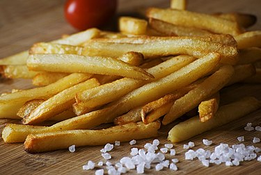

Where would the world be without french fried potatoes? Few other dishes enjoy such international succes and adoration. But, when you think about them, it's not too surprising. They are easy to cook, are delicious and go along with a wide variety of sauces. A 2022 study even indicated that they are more environmentally friendly than a lot of other dishes.

Everybody loves french fries...
Ingredients:
Potatoes
Oil
Steps:
Slice the potatoes 1/2 inch thick.
Soak them cold in water for at least an hour or overnight. The longer you soak them, the crispier they will get.
Rinse them twice with cold water and pat the completely dry.
Heat oil to 300 degrees. Fry them in about 6 batches for 5-6 minutes. Don't overcrowd them by placing too many in at a time, they won't be as crispy. Use a slotted spoon and place on a paper towel.
Increase heat to 400 degrees. Fry in batches until golden brown, about 5 minutes
Place them on paper towels and sprinkle immediately with salt.